Info:
Type: UI/UX & 3D Design
Skills Used:
UI/UX
3D Modelling
Graphic Design
Rendering
Tools Used:
Amplifier Instructions
A merging of a traditional 2D booklet with 3D design elements created using Blender, Adobe Illustrator and Adobe InDesign. Modeled and rendered for ease of iteration and Look Development.
Project Description
Userbase
The intended audience for the product are individuals with a strong interest in audio equipment and a proficient level of technological know-how. While not necessarily considered high-end, it caters to a niche purpose. Once the initial setup is complete, operating the product is a simple flick of a switch, ensuring ease of use and reliability. The primary need of users is to drive the impedance (Ω) of their audio equipment, particularly high-end audiophile grade headphones requiring higher impedance levels. It can be assumed that users are knowledgeable about the power requirements of their equipment, having conducted prior research.
Process
First Iteration
I gathered feedback from my peers and my professor to assist me in the direction of my iterations. The first feedback I received was that the exploded view was confusing to look at from a glance. Both colour schemes pictured below were created but I settled for the darker grays and purples due to the other colours having values that guided the eyes away from the instructions. The general layout was ready but needed some refinement.
Second Iteration
For the second iteration, I shrunk the document to an 8.5x11 inch format, reduced the size of the model and compacted it instead of using an exploded view. I added a second view of the back panel and adjusted the bottom to respect white space.
References
At the beginning of the project, I took pictures and recorded the dimensions of a physical tube amplifier made by Sabaj. Its purpose is to enhance the sound quality of audio output devices such as headphones. This would be the basis of my 3D mock-ups in Blender.
Initial Rendering and Modeling
I wanted to get a fairly accurate depiction of the tubes within the product, while keeping a sleek mostly textureless surface. Everything was coloured by procedural materials in blender’s shader editor. Modeling was done using Booleans and subdivisions to shape the model.
Pink Cel Shading
I used a lower polygon model to create a cel shaded model within Blender’s shader graph. I wanted a simple, flat shaded model to provide as little visual noise as possible without it being only black and white. A slight noise and curve modification was added to the grease pencil outline to sell this effect.

Final Renders
With the final render, lights and emissive materials were added to create depth in values within the render. Letting the users know the product was on and functional was paramount to the piece. Both an exploded and compacted view was created with the express purpose of experimenting between the two styles of presentation.
Reflection
Through the iterative nature of 3D design work, incorporating feedback and making revisions was a seamless process. Combining 2D and 3D spaces was a new approach for me and allowed for a more dynamic exploration of possibilities. Each week, I was able to present a diverse range of examples and quickly iterate based on feedback received.
Another work page focusing on my 3D Textures can be found here.


 
